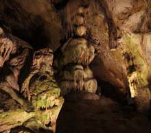

Намира се на южния склон на карстовия рид Рабишка могила, Западен Предбалк. Разположена е на около 18 километра северозападно от град Белоградчик и югозападно от село Рабиша.
Образувана е от карстови процеси в дебелослойни долнокредитни сивобели варовици. Тя е една от най-големите български пещери. Изходът и се нарича Вратача. Отделни зали имат колосални размери. Отделни зали са Триумфална зала, Полето, Хармана, Прилепна галерия, Стрелбището, Галерията с рисунките, Зловеща галерия, Слънчева зала, Зала на сталактоните, Зала на падналия бор, Зала на тополата, Тронна зала. Всички зали са свързани чрез галерии и пещерни тунели, има много сталактити, сталагмити и сталактони, а в Триумфална зала има малко езеро. В Магурата има постоянна температура от 12oC. Общата и дължина на галериите ѝ е 2500 метра.

В пещерата са открити кости от пещерна мечка, пещерна хиена и др. По стените могат да се видят рисунки от няколко исторически епохи. Най-ранните
рисунки са от времето на късния палеолит, като има и от времето на неолита; най-новите са от бронзовата епоха и са рисувани между 3000 и 1200 г.
пр.н.е. Рисунките изобразяват предимно ловни сцени.
Магурата е най-значимата за прилепите пещера в цяла Северозападна България. Целогодишно се обитава от общо 8 вида, всички приоритетни за опазване в цяла Европа: